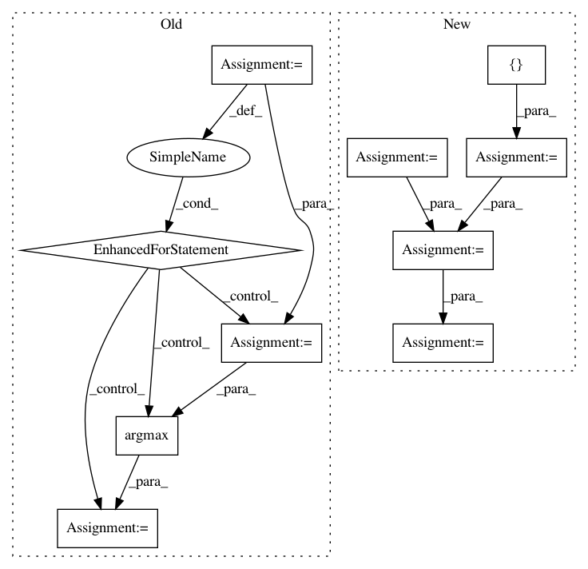

f305086031fc31a838d5b6c06eec35fd5cd16038,scripts/score_moe.py,,intra_ref,#Any#,130
Before Change
def intra_ref(refs):
print("ref pairwise BLEU: %.2f" % pairwise(refs))
_ref, _hypo = [], []
for rs in refs:
for i, h in enumerate(rs):
rest = rs[:i] + rs[i+1:]
s = [sentence_bleu(r, h) for r in rest]
j = np.argmax(s)
_ref.append(rest[j])
_hypo.append(h)
print("ref avg oracle BLEU (leave-one-out): %.2f" % corpus_bleu(_ref, _hypo))
if __name__ == "__main__":
if args.sys:
After Change
print("ref pairwise BLEU: %.2f" % pairwise(refs))
refs = list(zip(*refs))
m = len(refs)
concat_h = []
concat_rest = [[] for j in range(m - 1)]
for i, h in enumerate(refs):
rest = refs[:i] + refs[i+1:]
concat_h.append(h)
for j in range(m - 1):
concat_rest[j].extend(rest[j])
concat_h = list(chain.from_iterable(concat_h))
bleu = corpus_bleu(concat_h, concat_rest)
print("multi-reference BLEU (leave-one-out): %.2f" % bleu)
if __name__ == "__main__":
In pattern: SUPERPATTERN
Frequency: 3
Non-data size: 10
Instances
Project Name: pytorch/fairseq
Commit Name: f305086031fc31a838d5b6c06eec35fd5cd16038
Time: 2019-03-19
Author: myleott@fb.com
File Name: scripts/score_moe.py
Class Name:
Method Name: intra_ref
Project Name: ntucllab/libact
Commit Name: e81142f0869321cd8792e13bfc4f6fb85d9f1efc
Time: 2015-12-22
Author: yangarbiter@gmail.com
File Name: libact/query_strategies/uncertainty_sampling.py
Class Name: UncertaintySampling
Method Name: make_query